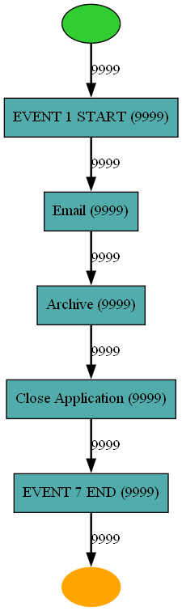
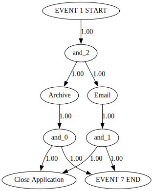

Process mining and causal discovery example
[24]:
! pip install sax4bpm
[25]:
import warnings
warnings.filterwarnings('ignore', category=RuntimeWarning)
warnings.filterwarnings('ignore', category=UserWarning)
[26]:
import sax
from sax.core.process_data.formatters.xes_formatter import XESFormatter
from sax.core.process_data.formatters.csv_formatter import CSVFormatter
from sax.core.utils.constants import Constants
from lingam.utils import make_dot
from sax.core.process_data.tabular_data import TabularEventData
from pm4py.objects.conversion.log import converter as log_converter
import sax.core.process_mining.process_mining as pm
[27]:
#Import event log file and create event_log data object
fileName = "simulated_run_non_overlapping_gen.csv"
event_log = pm.import_csv(eventlog=fileName,kloop_unroling=False,timestamp_format="%Y-%m-%d %H:%M:%S.%f")
[28]:
# Get the parsed dataset from the event log object
event_log.getData()
[28]:
| Id | Source | Type | Timestamp | Resource | Role | start:timestamp | |
|---|---|---|---|---|---|---|---|
| 0 | 2182 | EVENT 1 START | assign | 2023-02-24 12:02:25.523000+00:00 | Owner2 | Administrator | 2023-02-24 12:02:25.523000+00:00 |
| 1 | 2182 | EVENT 1 START | start | 2023-02-24 12:02:25.523000+00:00 | Owner2 | Lawyer | 2023-02-24 12:02:25.523000+00:00 |
| 2 | 2182 | EVENT 1 START | complete | 2023-02-24 12:02:25.523000+00:00 | Owner1 | Administrator | 2023-02-24 12:02:25.523000+00:00 |
| 3 | 2182 | assign | 2023-02-24 12:02:25.523000+00:00 | Owner3 | Lawyer | 2023-02-24 12:02:25.523000+00:00 | |
| 4 | 2182 | Archive | assign | 2023-02-24 12:02:25.523000+00:00 | Owner1 | Technician | 2023-02-24 12:02:25.523000+00:00 |
| ... | ... | ... | ... | ... | ... | ... | ... |
| 149980 | 686 | Close Application | start | 2023-02-03 10:57:38.527000+00:00 | Owner3 | Administrator | 2023-02-03 10:57:28.275000+00:00 |
| 149981 | 686 | Close Application | complete | 2023-02-03 10:57:44.397227+00:00 | Owner3 | Administrator | 2023-02-03 10:57:28.275000+00:00 |
| 149982 | 686 | EVENT 7 END | assign | 2023-02-03 10:57:44.397227+00:00 | Owner3 | Lawyer | 2023-02-03 10:57:28.275000+00:00 |
| 149983 | 686 | EVENT 7 END | start | 2023-02-03 10:57:44.397227+00:00 | Owner3 | Lawyer | 2023-02-03 10:57:28.275000+00:00 |
| 149984 | 686 | EVENT 7 END | complete | 2023-02-03 10:57:44.397227+00:00 | Owner1 | Lawyer | 2023-02-03 10:57:28.275000+00:00 |
149985 rows × 7 columns
[29]:
# Fetch and print the mandatory properties and optional properties within the event log file
print('Mandatory Properties of the parsed event log: \n',event_log.getMandatoryProperties())
print('Optional properties of the parsed event log: \n',event_log.getOptionalProperties())
Mandatory Properties of the parsed event log:
{'case:concept:name': 'Id', 'concept:name': 'Source', 'time:timestamp': 'Timestamp', 'lifecycle:transition': 'Type', 'start:timestamp': 'start:timestamp'}
Optional properties of the parsed event log:
{'Resource': 'Resource', 'Role': 'Role'}
[30]:
#Filter only the specified lifecycle events
filtered_log = event_log.filterLifecycleEvents(['start'])
filtered_log.getData()
[30]:
| Id | Source | Type | Timestamp | Resource | Role | start:timestamp | |
|---|---|---|---|---|---|---|---|
| 1 | 2182 | EVENT 1 START | start | 2023-02-24 12:02:25.523000+00:00 | Owner2 | Lawyer | 2023-02-24 12:02:25.523000+00:00 |
| 5 | 2182 | start | 2023-02-24 12:02:25.523000+00:00 | Owner2 | Technician | 2023-02-24 12:02:25.523000+00:00 | |
| 6 | 2182 | Archive | start | 2023-02-24 12:02:25.523000+00:00 | Owner2 | Administrator | 2023-02-24 12:02:25.523000+00:00 |
| 10 | 2182 | Close Application | start | 2023-02-24 12:02:36.506000+00:00 | Owner3 | Technician | 2023-02-24 12:02:25.523000+00:00 |
| 13 | 2182 | EVENT 7 END | start | 2023-02-24 12:02:43.253164+00:00 | Owner3 | Technician | 2023-02-24 12:02:25.523000+00:00 |
| ... | ... | ... | ... | ... | ... | ... | ... |
| 149971 | 686 | EVENT 1 START | start | 2023-02-03 10:57:28.275000+00:00 | Owner1 | Lawyer | 2023-02-03 10:57:28.275000+00:00 |
| 149975 | 686 | start | 2023-02-03 10:57:28.275000+00:00 | Owner3 | Technician | 2023-02-03 10:57:28.275000+00:00 | |
| 149976 | 686 | Archive | start | 2023-02-03 10:57:28.275000+00:00 | Owner3 | Technician | 2023-02-03 10:57:28.275000+00:00 |
| 149980 | 686 | Close Application | start | 2023-02-03 10:57:38.527000+00:00 | Owner3 | Administrator | 2023-02-03 10:57:28.275000+00:00 |
| 149983 | 686 | EVENT 7 END | start | 2023-02-03 10:57:44.397227+00:00 | Owner3 | Lawyer | 2023-02-03 10:57:28.275000+00:00 |
49995 rows × 7 columns
[32]:
#Performm process mining
import sax.core.process_mining.process_mining as pm
net = pm.discover_heuristics_net(event_log)
pm.view_heuristics_net(net)

[33]:
#transform the RawEventData to tabular representation
transposed_df = event_log.transposeToTabular()
transposed_df.getData()
[33]:
| Id | start:timestamp | Archive | Close Application | EVENT 1 START | EVENT 7 END | ||
|---|---|---|---|---|---|---|---|
| 0 | 0 | 2023-01-25 09:00:00+00:00 | 2023-01-25 09:00:10.743000+00:00 | 2023-01-25 09:00:17.152773+00:00 | 2023-01-25 09:00:00+00:00 | 2023-01-25 09:00:17.152773+00:00 | 2023-01-25 09:00:06.406000+00:00 |
| 1 | 1 | 2023-01-25 09:01:12.348000+00:00 | 2023-01-25 09:01:21.402000+00:00 | 2023-01-25 09:01:28.016404+00:00 | 2023-01-25 09:01:12.348000+00:00 | 2023-01-25 09:01:28.016404+00:00 | 2023-01-25 09:01:18.959000+00:00 |
| 2 | 10 | 2023-01-25 09:41:04.989000+00:00 | 2023-01-25 09:41:14.083000+00:00 | 2023-01-25 09:41:20.676132+00:00 | 2023-01-25 09:41:04.989000+00:00 | 2023-01-25 09:41:20.676132+00:00 | 2023-01-25 09:41:11.580000+00:00 |
| 3 | 100 | 2023-01-25 16:48:32.712000+00:00 | 2023-01-25 16:48:42.294000+00:00 | 2023-01-25 16:48:47.714735+00:00 | 2023-01-25 16:48:32.712000+00:00 | 2023-01-25 16:48:47.714735+00:00 | 2023-01-25 16:48:38.129000+00:00 |
| 4 | 1000 | 2023-02-08 12:01:59.993000+00:00 | 2023-02-08 12:02:10.483000+00:00 | 2023-02-08 12:02:16.848774+00:00 | 2023-02-08 12:01:59.993000+00:00 | 2023-02-08 12:02:16.848774+00:00 | 2023-02-08 12:02:06.355000+00:00 |
| ... | ... | ... | ... | ... | ... | ... | ... |
| 9994 | 9994 | 2023-06-19 12:25:33.362000+00:00 | 2023-06-19 12:25:43.787000+00:00 | 2023-06-19 12:25:50.615538+00:00 | 2023-06-19 12:25:33.362000+00:00 | 2023-06-19 12:25:50.615538+00:00 | 2023-06-19 12:25:40.188000+00:00 |
| 9995 | 9995 | 2023-06-19 12:25:55.764000+00:00 | 2023-06-19 12:26:05.662000+00:00 | 2023-06-19 12:26:11.965755+00:00 | 2023-06-19 12:25:55.764000+00:00 | 2023-06-19 12:26:11.965755+00:00 | 2023-06-19 12:26:02.064000+00:00 |
| 9996 | 9996 | 2023-06-19 12:27:15.155000+00:00 | 2023-06-19 12:27:25.548000+00:00 | 2023-06-19 12:27:31.124483+00:00 | 2023-06-19 12:27:15.155000+00:00 | 2023-06-19 12:27:31.124483+00:00 | 2023-06-19 12:27:20.729000+00:00 |
| 9997 | 9997 | 2023-06-19 12:30:28.224000+00:00 | 2023-06-19 12:30:38.557000+00:00 | 2023-06-19 12:30:44.296887+00:00 | 2023-06-19 12:30:28.224000+00:00 | 2023-06-19 12:30:44.296887+00:00 | 2023-06-19 12:30:33.960000+00:00 |
| 9998 | 9998 | 2023-06-19 12:31:29.774000+00:00 | 2023-06-19 12:31:40.249000+00:00 | 2023-06-19 12:31:46.576142+00:00 | 2023-06-19 12:31:29.774000+00:00 | 2023-06-19 12:31:46.576142+00:00 | 2023-06-19 12:31:36.099000+00:00 |
9999 rows × 7 columns
[34]:
#Perform causal discovery
import sax.core.causal_process_discovery.causal_discovery as cd
result = cd.discover_causal_dependencies(event_log)
cd.view_causal_dependencies(result)
[34]:
